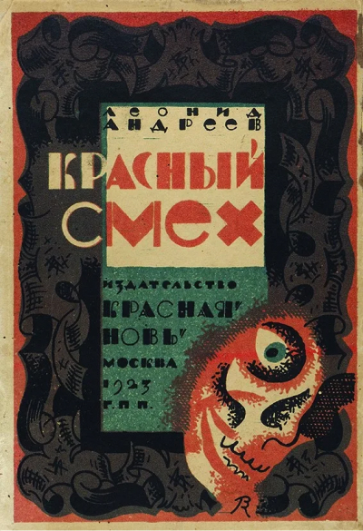

Красный смех
-
Автор
Леонид Андреев -
Жанр
рассказ -
Объем
70 стр -
Возрастное ограничение
12+
Описание
«…безумие и ужас.
Впервые я почувствовал это, когда мы шли по энской дороге – шли
десять часов непрерывно, не останавливаясь, не замедляя хода, не
подбирая упавших и оставляя их неприятелю, который сплошными
массами двигался сзади нас и через три-четыре часа стирал следы
наших ног своими ногами. Стоял зной. Не знаю, сколько было
градусов: сорок, пятьдесят или больше; знаю только, что он был
непрерывен, безнадежно-ровен и глубок. Солнце было так огромно,
так огненно и страшно, как будто земля приблизилась к нему и
скоро сгорит в этом беспощадном огне…»